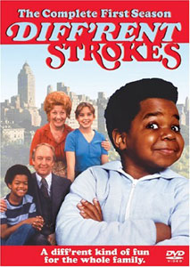

Thanks to Mike H. for bringing this to my attention: the change between the TV series “Different Strokes” and “Diff’rent Strokes.”Until Mike mentioned it, I thought it was Different Strokes. However, I never watched the TV series, so I can’t state — with confidence — that the show name has changed. Maybe I wasn’t paying close attention to the name when someone referenced it.
Also, I don’t follow Reddit (not for Mandela Effect topics, anyway), and I don’t usually look at “Mandela Effect” videos at YouTube.com. (I haven’t posted any videos about the Mandela Effect, and I kind of resent it when people want to connect the Mandela Effect phrase with “debunking” videos about Flat Earth Theory or anything else that takes us off-topic.)
So, I was rather pleased when Mike sent me the following video link. I don’t share all of timberwolves100’s memories or views, and — at this site — I avoid topics of religion and psy-ops or conspiracies. (See my Comments terms.)
(Nevertheless, since the “Lord’s Prayer” topic keeps coming up: everyone is correct about “debts” v. “trespasses.” Both are in the Bible, and it depends on which version you were raised with: Luke’s or Matthew’s. Most were raised with the “debts” version. The only way this topic enters the Mandela Effect is if you know you were raised with Luke’s version, but — in this reality — your family insists you were raised with Matthew’s, or vice versa. So, along with politics and conspiracies, let’s avoid religious topics here, including any Lord’s Prayer discussions.)
However much of timberwolves100’s video is a powerful overview of several topics we’ve discussed here in the past year. And — fast-forwarding to around the 11:30 mark — he sums it up nicely when he says you should find out what’s real for you.
It’s not necessarily media manipulation or psy-ops or anything like that. Don’t let anyone turn this into something that makes you uneasy, resentful, or downright anxious.
In my opinion, the Mandela Effect makes it possible for all of us to be correct in our memories, even when those memories seem to conflict with others’. So, it should put you more at ease, not increase your anxiety.
And, we’re not all traveling together in a pack. Just because you remember “Berenstein Bears” doesn’t mean you must also recall Looney Toons, or Mandela’s 20th century death, or any other alternate memory described as the Mandela Effect.
Trust your memories.
So, did you watch Diff’rent Strokes regularly enough to be sure it was Different Strokes? I’m interested in how widespread this alternate memory is.
And really, I’m applauding timberwolves100 for making a good, common-sense video. Thanks!
Hi, Fiona.
Just to start, I will mention that I remember ‘Diff’rent Strokes’. I used to watch it sporadically, when it was originally on.
Now I’d like to veer off an a tangent, if I may. I started watching timberwolves100’s video, and didn’t get very far before I was floored by what he said. Namely, that Depends is Depend now. A friend and I always used to watch the comedy sketch show ‘In Living Color’ together. They did a ‘Star Trek’ parody that referenced Depends, and we’ve been using that in jokes for literally decades! Here’s the sketch, from 1991:
https://www.youtube.com/watch?v=r-JkOzuiqxM
The reference is at about 1:22, and Jim Carrey clearly says “Depends”. I couldn’t find a reference to the company deciding to change the name, and the packaging without the ‘s’ on it just looks weird. For me, watching the show back in the ’90s, and finding out about the change today, all happened here: Latitude: 49.8997541 | Longitude: -97.1374937
No way, I remember \”Depends\” too!
I remember it as “Diff’rent Strokes,” having watched it as a child…but, oddly, both versions look correct to me now. I haven’t been paying attention to pop culture references to the show or discussions about it, so maybe I’ve seen it as “Different Strokes” enough times that it looks just as correct as the other (and, to me, the original) version.
I was not aware of Depends dropping (or never having?) the final S. That looks weird to me, and it doesn’t fit with all the jokes and puns utilizing the brand name. I just did a Google search and it doesn’t correct the word from “Depends” to “Depend,” yet all of the results reflect the dropped-S version, except for one or two parody images. I’d like to see if this remains the case in a few days or weeks.
Hi Fiona , Whelp I\’ve been told its different strokes for diff\’rent folks, for as long as I can remember this show! I honestly do not know which one tho! parents whatched it , but i would hear that phrase ever time ! now i know its an easy funny phrase for a quick laugh but i remember it for over 15 years and remember clearly different strokes for diff\’rent folks, Was that a common phrase for it? or early hiccup, or lil bit racial for depiction on the shared object word? ive only truly notice ME within the last week and a half , (open/closed so many doors and questions ) and I stumbled on a topic or extension of one would like your thoughts on it if possible please and new to this
Connor MacLoed, if you’re asking about the expression, here’s the origin: http://www.encyclopedia.com/doc/1O214-differntstrksfrdffrntflks.html
The show’s spelling was probably intended to get attention, and be a reference to the more casual, “cool” style of speaking in that era.
I watched Different Strokes many times. Well into the 100’s of times. Loved it. Watched all the time. Did I mention that I am familiar with this tv show. I am 99.9% sure it was NOT Diff’rent Strokes. It now looks utterly ridiculous and O=I love it because I love experiencing these types of memories that do not match the current physical reality. Also Depend vs Depends WOW. That’s nuts. I used to stock that very product and it was always Depends. For me at least.
For me, it has always been Diff’rent strokes. I actually got nervous before I read the article, wondering “Oh God – is it ‘Different’ now?”.
Kashmira, I didn’t mean to alarm you. However, I do have days when — like you — I see a comment and anxiously check the information, wondering how many of these we’re going to discover. (Frankly, I’m at the point of thinking this may have been going on for longer — and on a wider scale — than we’d realized.)
Whatchu talkin’ ’bout, Fiona?
Sorry, Fiona – I know that you’re probably getting a lot of comments like that, and I will totally understand if you reject this comment…but I couldn’t resist.
Mark, I’m laughing, and I appreciate humor in a topic that can easily get too serious. Thanks!
I watched DIFFERENT STROKES when I was younger.. I remember the title because I still have my old diaries and went through and read some where I had wrote about an episode of DIFFERENT STROKES…
I remember Diff’rent Strokes although I didn’t watch it. I thought the spelling was odd.
As far as recording information though, I do remember Thanksgiving as the 3rd Thur in Nov. I have diaries going back to the late 70s where I have written in Thanksgiving on the 4th Thur.
It was always, always Different Strokes for me. I only noticed the change very recently. Once again (just like with The BerenstAin Bears and Skechers) I noticed this one on my own, with a slight degree of unease and alarm. For me that is always a dead giveaway that this is not how it was where I recently “came from”. Sometimes I am not sure if something is a possible mandela effect, or I have dual memories of each possibility, but this one most definitely changed from what it was (for me at least)
I wasn’t a big fan of Diff’rent Strokes (and there is my answer) but I am pretty sure in my universe it is Diff’rent.
I watched Diff’rent Strokes once in a while, I was more into Facts of Life lol I remember as a teen thinking the spelling was like that because they were trying to show everyone that it was a different type of show- hence the spelling. One of my teachers also used it as an example of how to relate to readers by using slang or regional accents in writing.
Depends. My aunt needed them & we heard all the jokes, too. I can hear my dad saying, “We depend on Depends.”
It was always “Different Strokes” for me. I’ve found an article from 1978 that puts my mind at rest.
https://news.google.com/newspapers?nid=1696&dat=19781109&id=nw0dAAAAIBAJ&sjid=9pcEAAAAIBAJ&pg=6576,1927017&hl=en
Good find, Susan! Of course, I’d be more interested in the appearance of “Different Strokes” as the blurb title if they hadn’t — later in the blurb — spelled it “Diffferent.” The latter kind of negates the whole thing.
However, like TV Guide listings of TAPS, a Berenstein Bears show, and so on, this does demonstrate why some (especially those of us who didn’t watch it) might recall “Different Strokes,” in this reality. (That always needs to be ruled out, but — without a blurb like the one you listed — it’s difficult to eliminate all this-reality explanations, for some spellings.)
Susan that muddles things a bit. The article section is titled Different strokes and again in the piece. While the actual listing for friday 10th say “diff’rent strokes”. Which if anything shows how it was interchagable even then.
I used to watch the show and honestly can’t say which title is correct; they both seem ok. Probably more importantly neither seems completley wrong which to me would have indicates a stronger possibility that its an ME.
Exactly, AL. This seems like a “dual memory” for many people. As emails continue to arrive, I’m seeing less “I’m sure I recall Different Strokes,” and more “I kind of remember both,” followed by (logical) reasons to explain their uncertainty.
Fiona/Al – Having the headline and text/copy spell it the same way is, I have discovered, quite unusual, not only with this subject, but also with other Mandela Effects. I have checked numerous Mandela Effects against scanned newspapers and what I usually find is that the headline will have the spelling that I remember and then the text/copy will reflect the newer spelling. I used to watch this show and “Diff’rent Strokes” is so foreign to me and I had never seen it spelt that way until Fiona posted the article.
I had a discussion with Montre Bible on YouTube about this headline/copy anomaly because it appeared to me that there was a problem changing headlines to reflect the newer spelling. Having worked in the industry he said that headlines were usually set by hand and the copy by computer. Anyway, it stumps me. I can’t make sense of it. All I know is that the changes are not universal.
Interesting, Susan. My husband and I have also been involved in printing, and whether or not anything was set by hand varies with the era and location of the press. Since the early 70s, most everything switched to computer. As I understand it, type was either entirely set by hand or entirely set by computer; the only difference between headline & copy was the font size, and that’s a command sent to the computer… whether it was via punch cards, tape, or direct to digital.
That said, it’s possible that a supervising editor assembled the page with just the headlines, using his/her preferred spelling. It may have been a template used every week. Then a copywriter (a different person) would fill in the text for that particular week’s episode. That could explain the spelling differences. I believe some (many?) copywriters erred on the side of discretion — or simply wanted to highlight the editor’s typos by default — and didn’t mention the errors.
It’s a curious situation, but I wouldn’t attribute all (or even most) spelling conflicts (within one TV listing) as Mandela Effect, per se.
It could be that one of the two — the editor or copywriter — was working with an alternate memory. We can’t assume that, but it is rather odd for someone in the field of journalism to have weak spelling skills, and for no proofreader (or outspoken reader of the publication) to bring this to someone’s attention. On the scale we’re seeing across Mandela Effect reports, it seems (to me, anyway) downright odd.
I’m just not sure the spelling conflicts (in print, not in people’s memories) are due to the Mandela Effect.
Fiona – It is odd but rather reassuring at the same time that one isn’t going completely bonkers.
While I am at it, I noticed something else that was odd. I had already mentioned on another thread that “cafetaria” had changed to “cafeteria”. I managed to find some articles with the old spelling but only because the word had been hyphenated within the articles. And with one of the articles there are both spellings – the hyphenated “cafetaria” and “cafeteria” as a whole word. It’s like some global search and replace failed when it came to the hyphenated spelling.
Also I’ve noticed a couple of other changes. Moammar Gadhafi is now Muammar Gaddafi and Mohammed Ali is now Muhammad Ali. I have found articles that show the old spelling of their names.
A note on Depends. I’ve always called them Depends. Everyone I know has always joked about someone “needing Depends”. That doesn’t necessarily mean that the brand name was Depends, though. I always called “Lego” “legos” and wasn’t aware anyone called them anything different until I was reading the comments of an article about a year ago.
Melissa, it sounds to me like you’re saying people are just confused.
In my opinion, you — and other who posted similar comments — are confusing the issue. (You highlighted that when you said you weren’t “aware anyone called them anything different.”)
And, hoping to deter others from making “confused” comments like this, I’m addressing it now.
Of course people call them “Depends.” One doesn’t go to the store to buy a single Depend.
We’re talking about the brand name. Most people reporting this describe clear visual memories of commercials that included the brand name, “Depends.” Some recall seeing the packaging at grocery stores, also saying “Depends.”
The Legos issue is less clear-cut, but it was enough that the Lego company briefly protested use of the popular term, Legos. (Not their smartest marketing move, and one they clearly reconsidered.)
But, before we get further sidetracked with the Depends issue (when this article was intended to focus on Diff’rent/Different Strokes), I repeat: let’s focus on these as brand name issues.
Popular usage — how a brand name is said — is a separate topic altogether, sometimes a regional issue, and generally not relevant to the Mandela Effect.
People say “Oreos,” but the brand name is Oreo. People say “Eggos,” but the brand name is Eggo.
Likewise, whether or not people say “Depends” is a separate issue from the brand name “Depend” (in this reality) v. “Depends” (in an alternate reality that some of us recall).
So far, I’ve had no reports about Oreos, Eggos, etc., as brand names.
The distinction between popular usage and branding is important. The former is interesting but not part of the Mandela Effect; the latter might be.